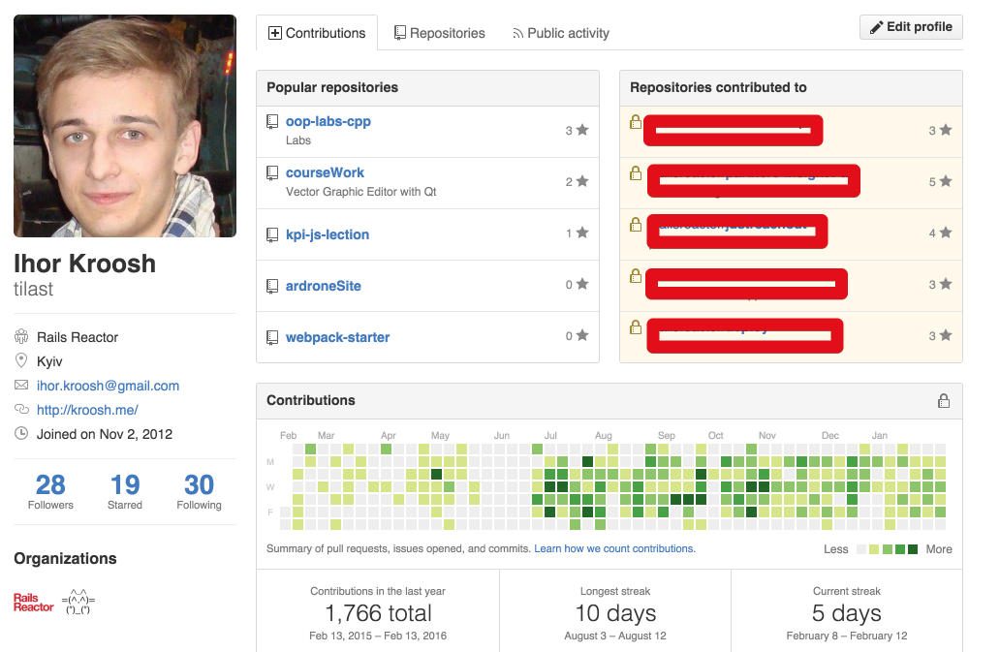
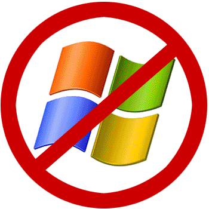
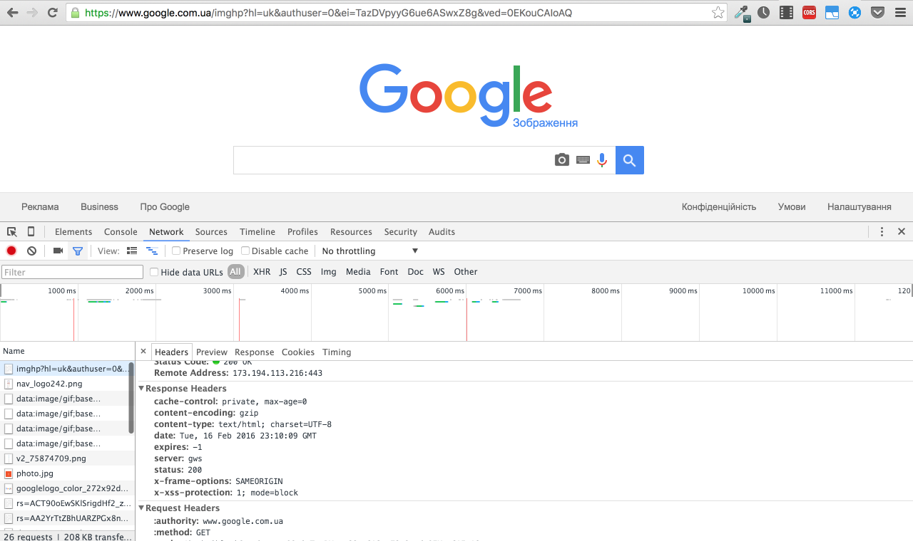
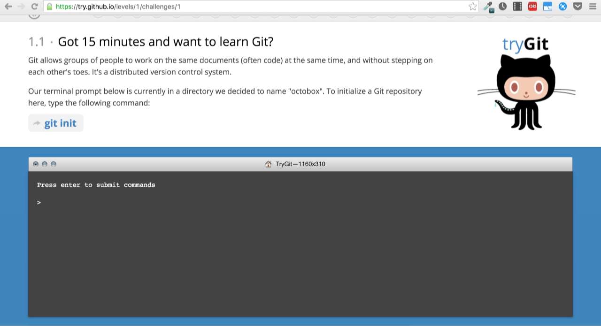

class: center, middle  --- class: center, middle  ## Ruby Programming Language --- # Who Am I - Software Engineer at Rails Reactor - 4th-year student of NTUU KPI, studying Computer Science - [My Github Profile](https://github.com/tilast)  --- # Why - Because I 😍 Ruby - Because I want to study how to share knowledge - To expand Ukrainin Ruby Community - [Rails Reactor](http://railsreactor.com) is in permanent search of new talented developers 😅 --- # Why web development Сьогодні веб девелопмент загалом, а особливо бекенд девелопмент, є однією з найцікавіших галузей софтвер девелопменту загалом. Тут доводиться вирішувати задачі оптимізації, мастштабування, оптимальної передачі данних, оптимальної структури даних, безпеки і тд. Якщо подивитись на сучасні веб сервіси такі як Амазон, Гугл, ВК, ФБ, то можна зрозуміти, що давно пішли часи, коли сайт робили в одному пхп-файлику кидали в apache. Сьогодні потрібно розумно організовувати інтеграцію з зовнішнім світом, делегувати певні обчислення/задачі іншим серверам і т.д. --- # What is this course about This course is about pleasure and delight being the web developer The main goal of the course is to make you love web development and ruby --- class: center, middle # Why Ruby Ruby робить програмістів щасливими 😍 --- class: center, middle # Who uses Ruby <img width="250px" src="./external/github.jpg"> <img width="250px" src="./external/airbnb.png"> <img width="250px" src="./external/kickstarter.png"> --- # Ruby A dynamic, open source programming language with a focus on simplicity and productivity. It has an elegant syntax that is natural to read and easy to write. --- # Rails Rails is the most popular web framework written in Ruby. It implements MVC(Modev-View-Controller) structural patterns and has a huge amount of extensions and gems. --- # Rails The creator of Ruby on Rails is David Hansson - one person, who made money on the Ferrari with web framework 😊 --- class: center, middle # Let's get started --- # What will we learn - What is the Internet. HTTP - Version Controll System GIT - ... --- # What will we need - Linux/Mac OS X is required(if you are on Windows, you can install Linux instead of it or use [VirtualBox](https://www.virtualbox.org/wiki/Downloads)) - Sublime Text / Ruby Mine / Atom - Chrome/Chromium <img src="./external/linux.png" width="200px">  --- # What is HTTP In order to Wikipedia, ``` The Hypertext Transfer Protocol (HTTP) is an application protocol for distributed, collaborative, hypermedia information systems. HTTP is the foundation of data communication for the World Wide Web. ``` In other words, HTTP is the language for client-server web communication. Let's take a looks at several examples. --- # Examples: communicate using CLI sockets `nc` - Швейцарський армійський ніж для TCP/IP Проста утиліта для читання й запису даних через віддалені з’єднання за протоколами TCP чи UDP під Unix. Призначена як надійний засіб для використання безпосередньо чи з інших програм й сценаріїв. У той же час це багатий можливостями засіб налагодження й вивчення мереж, оскільки він включає в себе деякі цікаві функції та може створювати практично будь-які необхідні види з’єднань. ``` > nc -l 7654 ``` ``` > nc 10.37.129.2 7654 ``` --- # Examples ``` > ping google.com.ua PING google.com.ua (216.58.209.163): 56 data bytes 64 bytes from 216.58.209.163: icmp_seq=0 ttl=56 time=25.902 ms 64 bytes from 216.58.209.163: icmp_seq=1 ttl=56 time=27.332 ms 64 bytes from 216.58.209.163: icmp_seq=2 ttl=56 time=27.241 ms ^C --- google.com.ua ping statistics --- 3 packets transmitted, 3 packets received, 0.0% packet loss round-trip min/avg/max/stddev = 25.902/26.825/27.332/0.654 ms ``` --- # Examples ``` > nc 216.58.209.163 80 GET / HTTP/1.0 Host: www.google.com.ua HTTP/1.0 200 OK Date: Tue, 16 Feb 2016 21:37:27 GMT Expires: -1 Cache-Control: private, max-age=0 Content-Type: text/html; charset=windows-1251 P3P: CP="This is not a P3P policy! See https://www.google.com/support/accounts/answer/151657?hl=en for more info." Server: gws X-XSS-Protection: 1; mode=block X-Frame-Options: SAMEORIGIN Set-Cookie: NID=76=KdxIbbUTeugCsAW1Uy7KKYiCfRXJXexE2gSFkeue_Z_cjvMXBlvKYBsnJqH4W5y6DS7yKSRCs4t1XWg1oIKb_mID4yp3PVfacQEB44xQps2hI5j06Od7iw2mPA7Y4ulw; expires=Wed, 17-Aug-2016 21:37:27 GMT; path=/; domain=.google.com.ua; HttpOnly Accept-Ranges: none Vary: Accept-Encoding <!doctype html><html itemscope="" itemty... ``` --- class: center, middle # Google Chrome Dev Panel  --- class: center, middle # Git - Version Control System Git is a free and open source distributed version control system designed to handle everything from small to very large projects with speed and efficiency. <img src="./external/git.png" width="600px"> --- # Why do we need GIT - git allows you to simplify development - to see latest changes fast - git allows to save different versions of your projects - git makes it easy to collaborate --- class: center, middle # What is GitHub GitHub is the server of your repos. <img src="./external/github.jpg" width="600px"> --- class: center, middle # Learn git The best interactive tutorial to learn git - [Try Git](try.github.io)  --- class: center, middle # RVM - Ruby Version Manager [**RVM**](https://rvm.io/rvm/install) allows you to have different versions of Ruby on one computer simultaneously. It also allows you to create **gemsets** - separated sets of Ruby packages. The main advamtage of gemset is that it helps us to avoid gems versions collision and conflicts. <img src="./external/rvm.png" width="200px"> --- # Install RVM Before any other step install mpapis public key (might need gpg2) (see security) ``` gpg --keyserver hkp://keys.gnupg.net --recv-keys 409B6B1796C275462A1703113804BB82D39DC0E3 Unless doing guided install you should read all sub-sections under the RVM Section. ``` Install RVM (development version): ``` \curl -sSL https://get.rvm.io | bash ``` Install RVM stable with ruby: ``` \curl -sSL https://get.rvm.io | bash -s stable --ruby ``` --- # RVM ## create gemset ``` > rvm use ruby-2.3.0@my-favorite-gemset --create ``` ## .ruby-version Allows to switch on required version when we go to folder with this file ``` 2.3.0 ``` ## .ruby-gemset Allows to switch on required gemset when we go to folder with this file ``` my-favorite-gemset ``` --- # Test it ``` > irb 2.3.0 :001 > ``` --- # Home Assignment - Learn basic [Linux commands](http://www.comptechdoc.org/os/linux/usersguide/linux_ugbasics.html) - Study interactive git tutorial [Try Git](http://try.github.io) - Study Ruby Basics on [Try Ruby](http://tryruby.org/) or/and [Codacademy](https://www.codecademy.com/) --- class: center, middle # Thanx for your time! Hopefully meet you next Saturday 😊 --- class: center, middle